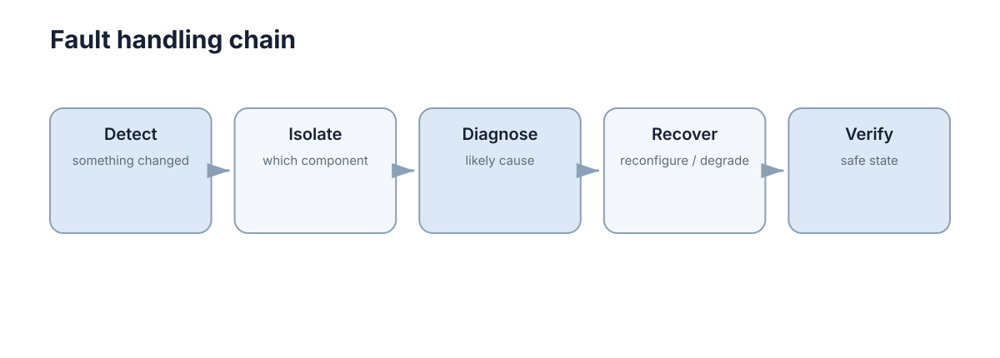

Fault Detection & Tolerance
故障是组件偏离正常工作状态，失效则是系统无法完成要求的功能。容错的目标是：单个组件出问题时，系统还能检测、隔离，并进入可接受的降级状态。

先约定三个容易混淆的词。故障（fault）是组件内部的异常状态，例如编码器读数冻结；错误（error）是故障导致的状态偏差，例如里程计位置漂移；失效（failure）是系统对外提供的功能不再满足要求，例如无法到达目标。三者的关系是链式的：故障产生错误，错误若未被处理就演变成失效。
这条链条上的每一环都是可以打断的：检测决定“多久发现”，隔离决定“影响范围”，恢复决定“还能做什么”。没有检测就没有容错，因为系统会把错误数据当作正确数据继续使用，问题只会以更难定位的形式在后面爆发。
工程上常用的两个上层指标是平均无故障时间与可用度。设故障率 \(\lambda\)、平均修复时间 \(\text{MTTR}\)，则
这两个式子说明：在长任务中，降低 MTTR 往往比提高单个部件的可靠性更划算。若 MTBF 为 10000 h、MTTR 为 0.5 h，可用度约 0.99995；若把 MTTR 压到 0.05 h（靠快速检测与快速降级），同样可用度只需 MTBF 约 1000 h，相当于对部件可靠性的要求放松了一个数量级。
故障模型与检测手段
讨论容错前必须明确“故障长什么样”。不同故障模型对应的检测手段和代价差别很大：
| 故障模型 | 行为 | 检测手段 | 特点 |
|---|---|---|---|
| fail-stop | 立即停止响应 | 心跳超时 | 最易处理，代价最低 |
| crash-recovery | 崩溃后重启，可能丢失状态 | 心跳加状态版本号 | 需处理状态不一致 |
| 沉默失效 | 继续输出，但数据错误 | 物理范围检查、交叉验证、残差监测 | 最危险，阈值检测易漏 |
| 拜占庭 | 任意错误输出，可能伪装正确 | 多数派表决、一致性校验 | 代价高，通常需 3 倍冗余 |
沉默失效在机器人系统中比崩溃更常见：编码器卡在某个读数、IMU 零偏缓慢漂移、相机画面冻结，都属于这一类比。它们不会触发超时，只能靠内部一致性和模型残差来发现。
不同故障模型对检测时间的敏感度也不同。设故障在 \(t_0\) 发生，检测在 \(t_0+T_d\) 给出告警，从检测到系统进入安全状态还需 \(T_r\)，则暴露时间
在这段时间里系统使用的是错误数据。若错误的增长速度是 \(\dot e\)，则累积误差上界为 \(\dot e \cdot T_\text{exp}\)。这个量必须与安全余量比较，而不是与“任务是否完成”比较。
| 故障类型 | 典型 \(T_d\) 目标 | 典型 \(T_r\) | 主要限制因素 |
|---|---|---|---|
| fail-stop | 1–3 个心跳周期 | 0.1–1 s | 心跳周期与超时设定 |
| 沉默失效（突变） | 0.1–1 s | 0.1–1 s | 阈值灵敏度与噪声水平 |
| 沉默失效（漂移） | 10–100 s | 1–5 s | 漂移率与可容忍累积误差 |
| 拜占庭 | 1 轮表决 | 1–10 s | 冗余度与通信轮次 |
表的最后两行是难点：漂移类故障的检测延迟被物理规律限制。若零偏漂移率是 0.01 °/s，而姿态误差容忍上限是 1°，那么无论阈值多灵敏，纯靠观察该传感器也至少需要 100 s 才能判定它失准——除非引入独立参考做交叉验证。
故障检测首先需要正常行为的参考
可以检查传感器是否超出物理范围、多个传感器是否互相矛盾、控制循环是否按时运行、模型残差是否突然增大。单个阈值适合简单故障；复杂系统常结合多个信号降低误报。
检测的基本结构是比较残差与阈值：
其中 \(z_k\) 是第 \(k\) 步的观测量，\(\hat z_k\) 由运动学模型、卡尔曼滤波预测或历史统计给出。阈值 \(\eta\) 的选择直接决定检测延迟与误报率的关系：
| 阈值 \(\eta\) | 检测延迟 | 误报率 | 适用场合 |
|---|---|---|---|
| 偏小 | 短 | 高，正常波动即触发 | 失效后果极严重、备用充足 |
| 适中（约 3\(\sigma\)） | 中等 | 低 | 一般传感器监测 |
| 偏大 | 长 | 极低 | 备用能力弱、频繁降级代价高 |
用残差的滑动统计量（均值、方差、卡方统计量）比瞬时阈值更稳，因为它能抑制单帧噪声引起的误报。若残差近似高斯，则平方和服从卡方分布：
其中 \(m\) 是残差维数、\(\Sigma\) 是残差协方差。按 \(1-\alpha\) 分位数设阈值，可以直接控制误报率 \(\alpha\)，而不是靠调参碰运气。
各种检测手段的适用面差别很大：
| 手段 | 检测对象 | 对小漂移的灵敏度 | 计算代价 | 主要弱点 |
|---|---|---|---|---|
| 瞬时阈值 | 突变 | 低 | 极低 | 高噪声下误报多 |
| 滑动均值与方差 | 慢变偏移 | 中 | 低 | 响应滞后 |
| 卡方检验 | 多变量一致性 | 中高 | 低到中 | 需要可靠的 \(\Sigma\) |
| 卡尔曼残差（NIS） | 模型与观测不一致 | 高 | 中 | 依赖模型准确度 |
| 交叉验证（异构传感器） | 共性错误以外的一切 | 高 | 中 | 无法发现共因失效 |
检测性能的定量指标：延迟、误报率与可用性
只看“报警了没有”会漏掉真正决定系统行为的东西。检测器的行为可以用三个数刻画：检测延迟 \(T_d\)、误报率 \(P_{FA}\)、以及平均误报间隔 MTFA。
对双侧高斯残差，阈值 \(\eta\) 与单侧尾部概率的关系是
把它换成工程语言就是下面的表。注意最后一列：在 100 Hz 的监控频率下，3\(\sigma\) 阈值平均每几秒就会误报一次，这足以让操作员很快开始忽略告警。
| 阈值 \(\eta\) | 单侧 \(Q\) | 双侧误报率 | 100 Hz 下 MTFA | 检出 \(0.2\sigma\) 偏移的延迟 |
|---|---|---|---|---|
| 2\(\sigma\) | 2.3e-2 | 4.6e-2 | 0.22 s | 约 10 个采样 |
| 3\(\sigma\) | 1.3e-3 | 2.7e-3 | 3.7 s | 约 15 个采样 |
| 4\(\sigma\) | 3.2e-5 | 6.3e-5 | 158 s | 约 20 个采样 |
| 5\(\sigma\) | 2.9e-7 | 5.7e-7 | 约 5 h | 约 25 个采样 |
检测延迟的估算很简单：若偏移按每采样 \(\delta\) 增长，从偏移开始到越过阈值需要约 \(\eta/\delta\) 个采样。把 \(\eta\) 从 3\(\sigma\) 提到 5\(\sigma\)，延迟只增加约三分之二，误报间隔却提高四个数量级——这就是为什么提高阈值几乎总是正确的第一步，而真正的困难在于如何在不降低灵敏度的前提下提高阈值，答案是用更长的观测窗。
累积和（CUSUM）检验正是为此设计的。定义统计量
当 \(S_k > \eta_c\) 时报警。常用的取值是 \(\nu = \delta/2\)、\(\eta_c\) 由期望的 MTFA 反推。对持续的小偏移，CUSUM 的检测延迟可以比固定阈值低数倍到十倍，代价是它对单次脉冲型故障不敏感，因此实践中通常与瞬时阈值并行使用。
| 指标 | 定义 | 典型目标 | 与调参的关系 |
|---|---|---|---|
| 检测延迟 \(T_d\) | 从发生到报警的时间 | 小于安全余量允许的暴露时间 | 阈值越低越短 |
| 误报率 \(P_{FA}\) | 正常状态下报警的概率 | 单通道低于 1e-5 | 阈值越高越低 |
| MTFA | 误报间隔的期望 | 大于任务时长的 10 倍 | 由 \(P_{FA}\) 与频率决定 |
| 定位正确率 | 报警指向真实故障源 | 高于 90% | 依赖独立信息源数量 |
检测之后还要判断谁出了问题
两个编码器读数不一致，只能说明至少一个有问题。结合 IMU、车辆运动模型或第三个传感器，才能进一步做 fault isolation。没有隔离就直接丢弃某个传感器，可能反而删除了正确数据。
| 检测结果 | 可推出的结论 | 不能推出的结论 |
|---|---|---|
| 两个编码器不一致 | 至少一个错了 | 哪个错了 |
| 与 IMU 积分一致 | 该编码器大概率正确 | 另一路一定错 |
| 三路中两路一致 | 多数派大概率正确 | 多数派同时错的概率为零 |
隔离的本质是用独立信息源打破平局。如果所有信息源共享同一个前提（同一电源、同一时间源、同一坐标系转换），它们会一起出错，多数派表决也会同时失效——这就是共同失效模式。
隔离能力可以量化。设单路传感器正确率 \(p\)、共因失效概率 \(q\)，则 \(N\) 路多数派的错误率近似为
关键在 \(q\) 这一项：当 \(q>0\) 时，无论 \(N\) 加到多大，多数派都无法优于 \(q\)。这解释了为什么异构冗余比简单加一路同型传感器更重要——它降低的是 \(q\)，而不是括号内的独立项。
| 冗余配置 | 单路正确率 \(p\) | 共因概率 \(q\) | 三取二错误率上界 |
|---|---|---|---|
| 三路同型号同电源 | 0.99 | 0.01 | 约 0.01 |
| 三路同型号独立供电 | 0.99 | 0.001 | 约 0.001 |
| 异构两路加一路独立 | 0.99 | 1e-4 | 约 1e-4 |
| 异构三路（视觉、激光、雷达） | 0.99 | 1e-5 | 约 1e-5 |
恢复策略通常以降级为目标
故障后不一定还能继续完成原任务。更安全的目标可能是减速、停车、返航或切换人工控制。
def fallback(localization_ok, lidar_ok):
if not localization_ok:
return "STOP_AND_RELOCALIZE"
if not lidar_ok:
return "LOW_SPEED_CAMERA_ONLY"
return "NORMAL"
这段代码的结构包含两个布尔变量 \(localization\_ok\) 与 \(lidar\_ok\)，按优先级短路判断。它体现了一个重要原则：降级优先级应写成显式顺序，而不是让多个条件自由组合。顺序意味着当定位和激光同时失效时，系统的行为是确定的（进入重定位流程），而不是依赖条件求值的实现细节。
降级选择应考虑两个量：当前能力下能完成的最保守任务，以及恢复到正常模式所需的可观测条件。只写降级而不写恢复条件，系统往往会在降级状态下滞留，或在不该恢复时盲目恢复。
每种降级都能按“能力保留”和“恢复成本”两个量排序，这比只按“安全程度”排序更有用：
| 降级动作 | 能力保留 | 恢复成本 | 恢复前提 |
|---|---|---|---|
| 限速 | 高 | 极低 | 指标稳定一段时间 |
| 关闭部分功能 | 中 | 低 | 模块自检通过 |
| 切换保守控制器 | 中低 | 中 | 主控制器重载成功 |
| 返航 | 低 | 高 | 定位恢复 |
| 停车 | 最低 | 极高 | 人工介入 |
指数退避与重试上限的定量设计
连续失败时不要无限高频重试：这既浪费资源，也可能让本已拥塞的链路更不可用。常用做法是指数退避加上限，第 \(n\) 次重试前等待
其中 \(t_0\) 是初始等待、\(t_\text{max}\) 是等待上限、\(j\) 是抖动幅度，用于避免多个节点同时重试造成同步冲击。总等待时间上界为
| 参数 | 典型取值 | 影响 |
|---|---|---|
| 初始等待 \(t_0\) | 50–200 ms | 决定短期恢复速度 |
| 上限 \(t_\text{max}\) | 1–5 s | 决定长期资源占用 |
| 重试次数 \(N\) | 3–7 | 决定何时转入降级 |
| 抖动 \(j\) | \(t_n\) 的 10%–50% | 决定重试风暴的抑制效果 |
以 \(t_0=0.1\) s、\(t_\text{max}=2\) s、\(N=6\) 为例，忽略抖动时总等待约为 \(0.1+0.2+0.4+0.8+1.6+2.0=5.1\) s。这个数字应和任务的时间预算对齐：若 5 s 已经超出安全窗口，重试就必须在更早的次一级失败时切换到降级路径，而不是继续等。
抖动幅度的选择也有定量依据。设 \(M\) 个节点同时开始重试、抖动在 \([0,j]\) 上均匀分布，则首次重试的碰撞概率近似
其中 \(\epsilon\) 是可分辨的时间粒度（例如调度粒度 1 ms）。\(M=100\)、\(\epsilon=1\) ms 时，若 \(j=1\) ms 则几乎必然碰撞；把 \(j\) 提到 100 ms 才能把碰撞概率压到可接受水平。这解释了为什么抖动幅度是退避算法里最容易被低估的参数。
恢复时间目标与降级深度的选择
容错设计最终要落到“多快恢复、恢复到什么程度”。这两个量为降级深度和恢复时间目标（RTO）提供了设计坐标。
设正常模式的峰值风险暴露为 \(R_0\)、系统在时刻 \(t\) 的瞬时暴露为 \(R(t)\)，那么从故障发生到恢复的累计暴露是
其中 \(T\) 是总的中断时间。降级深度的作用是压低 \(R(t)\)，检测与恢复速度的作用是缩短 \(T\)，两者相乘构成总风险。这解释了为什么“降级到很保守”和“很快恢复”对最终安全的贡献是可互换的，尽管它们在工程上的代价完全不同。
| 降级层级 | 保留能力 | 典型进入条件 | 恢复条件 | RTO |
|---|---|---|---|---|
| L0 正常 | 全部任务 | — | — | — |
| L1 降速 | 约 80% 功能 | 单项指标接近阈值 | 指标持续稳定 | 小于 1 s |
| L2 降功能 | 约 50%，限速限域 | 关键传感器短时失效 | 传感器恢复且自检通过 | 1–5 s |
| L3 最小任务 | 仅安全移动与返回 | 定位精度退化 | 重定位成功 | 5–30 s |
| L4 安全停止 | 停车并保持可控 | 安全前提不满足 | 人工复位 | 0.5–3 s |
| L5 人工接管 | 由操作员操作 | 超出自动能力 | 操作员交还 | 秒级 |
这张表的一个要点是降级层级不是单调的“越来越差”：L4 的安全停止在风险意义上优于 L3 的带病移动，但在任务意义上更差。因此选择层级时要同时看两个排序，并且把“无法继续任务但绝对安全”和“能继续但风险高”明确区分开，而不是用一条“健康度”标量把两者混在一起。
把相对暴露 \(R/R_0\) 与恢复时间相乘，可以直接比较不同策略的总暴露：
| 降级层级 | 相对暴露 \(R/R_0\) | 恢复时间 | 累计暴露 |
|---|---|---|---|
| L1 | 0.6 | 1 s | 0.6 |
| L4 | 0.05 | 3 s | 0.15 |
深降级往往用稍长一点的时间就换来小得多的总暴露，这就是“宁可停得早、不要停得晚”的定量依据。
冗余要避免共同失效模式
两只同型号传感器共用同一电源，并不能抵御电源故障；两套软件副本共享同一个 bug，也不会因为“有两个实例”就更可靠。有效冗余应尽量在物理原理、供电、通信和软件路径上减少共同故障。
| 冗余方式 | 抵御的故障 | 共因风险 | 代价 |
|---|---|---|---|
| 同型号双传感器 | 单点硬件损坏 | 高（同批缺陷、同电源） | 低 |
| 异构传感器（视觉加激光） | 单模态退化 | 低（退化条件不同） | 中（需标定与融合） |
| 双电源与双总线 | 供电、链路失效 | 中（共用接地或线束） | 中 |
| N 版本编程 | 软件缺陷 | 中（需求误解仍共有） | 高 |
冗余的边际收益是递减的，可以用上面的共因公式解释：第一次加入异构通道把 \(q\) 从 0.01 降到 0.001，收益是 10 倍；再加一路若仍解决不了 \(q\) 里剩下的那部分（例如共同需求误解），后续投入可能只能把错误率从 0.001 降到 0.0009，几乎无意义。因此冗余设计的第一步是画出共同依赖图，而不是增加通道数。
共同失效模式可以按“共享了什么”分类，每一类都有对应的破除手段：
| 共享项 | 典型共因 | 表现 | 破除手段 |
|---|---|---|---|
| 电源 | 电压跌落 | 多路同时失效 | 独立供电与稳压 |
| 时钟 | 时钟跳变 | 时间戳同时出错 | 独立时间源 |
| 外参与坐标系 | 标定错误 | 多路一致地偏移 | 在线标定与残差监控 |
| 软件库 | 同一解析器缺陷 | 多路同时解析错 | 异构实现 |
| 环境 | 强光、扬尘 | 视觉与激光同时退化 | 引入互补模态 |
| 需求理解 | 场景定义错误 | 所有实现同样漏检 | 独立需求评审 |
| 机械结构 | 共振 | 多传感器同频受扰 | 隔振与分散安装位 |
| 固件版本 | 版本升级引入缺陷 | 多设备同时异常 | 灰度升级与回滚 |
冗余与多数派表决的代价
冗余的容错能力可以用多数派表决量化：\(N\) 个副本中允许 \(f\) 个同时出错而仍能得出正确结果，要求
若故障可能伪装成正确输出（拜占庭模型），多数派不足以保证一致性，需要更强的界
| 副本数 \(N\) | 可容忍故障数 \(f\) | 表决延迟 | 相对成本 | 备注 |
|---|---|---|---|---|
| 1 | 0 | 无 | 1× | 无容错 |
| 2 | 0 | — | 2× | 无法区分谁对，只能检测不一致 |
| 3 | 1 | 1 轮 | 3× | 最常用，可定位单点故障 |
| 4 | 1 | 1 轮 | 4× | 与 3 副本容错能力相同，不划算 |
| 5 | 2 | 1 轮 | 5× | 用于高价值或长任务 |
| 6 | 2 | 1 轮 | 6× | 偶数，容错能力与 5 相同 |
| 7 | 3 | 1 轮 | 7× | 成本高，仅用于极长任务 |
| 9 | 4 | 1 轮 | 9× | 收益递减明显 |
两个结论值得记住：偶数副本没有额外收益（4 副本与 3 副本可容忍的故障数相同）；表决延迟通常由最慢副本决定，因此加大冗余会同时抬高响应时间。
表决延迟可以估算。若各副本延迟独立同分布，均值 \(\mu\)、标准差 \(\sigma\)，则 \(N\) 取中位数需要等待其中一个中位序的副本完成。\(N=3\)、\(\mu=10\) ms、\(\sigma=2\) ms 时，取第二小的期望延迟约为 \(\mu + 0.85\sigma \approx 11.7\) ms，再加上汇总开销 0.5 ms，总表决延迟约 12 ms。相对单副本，这是用 20% 的延迟换取单点故障容忍——这个交换是否值得，取决于系统在 2.4 ms 额外延迟里会走多远，也就是上面安全余量公式里的 \(v\Delta\tau\) 项。
故障演练应该成为测试的一部分
可以主动断开传感器、延迟网络、杀死节点或篡改输入，观察系统是否进入预期安全状态。只有故障路径真正被运行过，容错设计才不只是架构图上的假设。
演练应覆盖三类目标：检测是否在预期时间内触发、隔离是否正确、降级后系统是否仍可安全运行或安全停止。三者缺一，故障路径都不算验证过。
| 注入方式 | 模拟的故障 | 期望观测 | 通过判据 |
|---|---|---|---|
| 切断传感器供电 | fail-stop | 心跳超时并进入降级 | 报警在 3 个周期内 |
| 冻结传感器读数 | 沉默失效 | 残差或交叉验证报警 | 报警在 \(T_d\) 目标内 |
| 注入缓慢零偏 | 漂移 | 滑动统计或均值报警 | 累积误差未超余量 |
| 注入网络延迟与丢包 | 通信退化 | 退避重试后降级 | 总等待未超时 |
| 杀死控制节点 | 进程崩溃 | watchdog 触发停车 | 停车在超时时间内 |
| 注入错误数据 | 拜占庭 | 表决剔除异常副本 | 输出未受影响 |
| 时钟跳变 | 分布式时间异常 | 时间戳监控报警 | 超限即降级 |
| 磁盘写满 | 日志或地图写失败 | 写失败可观测 | 不影响安全路径 |
| CPU 过载 | 控制周期抖动 | 周期监控触发 | 抖动超限进入降级 |
| 消息乱序 | 时序假设被破坏 | 序号或时间戳检查 | 拒绝乱序帧 |
| 参数被篡改 | 配置错误 | 参数范围校验 | 越界拒绝启动 |
| 双故障叠加 | 组合故障 | 状态机确定性 | 行为符合转移表 |
这几类注入的优先级不同：能被超时发现的故障优先演练，因为它们最容易验证；沉默失效与组合故障需要更多准备，但漏掉它们的代价最大。
演练数据还有第二个用途：它能给出 \(T_d\) 与 \(P_{FA}\) 的实测分布，而不是纸面上假设的值。用这些实测值反推阈值和余量，比在仿真里调参可靠得多。
故障检测要平衡漏报与误报
阈值过宽会延迟发现真实故障，过窄则让系统在正常波动中频繁降级。选择阈值时应结合故障后果、备用能力和检测延迟，通过故障注入数据绘制漏报与误报之间的权衡。
| 误判方向 | 直接后果 | 长期后果 |
|---|---|---|
| 漏报（false negative） | 错误数据继续被使用 | 误差累积、不可预测的失效 |
| 误报（false positive） | 无谓降级、任务中断 | 用户失去信任、忽略告警 |
| 检测延迟过长 | 干预窗口被吃掉 | 只能被动停车 |
| 隔离错误 | 删除了正确通道 | 性能与安全同时下降 |
| 恢复条件缺失 | 滞留在降级状态 | 任务能力长期受损 |
| 阈值与工况不匹配 | 某工况下反复误报 | 该工况下无人相信告警 |
| 表决被共同故障击穿 | 多数派同时给出错误结论 | 直接输出错误状态 |
| 只看单次检测结果 | 报警未复现即被忽略 | 隐患长期潜伏 |
| 阈值长期不校准 | 传感器老化后灵敏度下降 | 漏报率缓慢上升 |
实践中的经验是让两类错误的代价可比：如果误报只是多一次减速，而漏报会导致碰撞，阈值就应当偏严；反之，如果误报会让昂贵任务全部中止，阈值就应偏松并辅以多信号确认。
把这条经验写成式子：设漏报一次损失 \(C_{MD}\)、误报一次损失 \(C_{FA}\)，在阈值处的最小期望代价解满足两类错误的似然比条件，直观上等价于
也就是说，代价比 \(C_{MD}/C_{FA}\) 直接决定阈值应当朝哪个方向偏。当后果差距在一百倍以上时，宁可让 MTFA 降到几分钟，也不能让漏报概率停在 1e-3 量级——把 \(C_{MD}/C_{FA}\) 写出来，比争论“阈值取 3\(\sigma\) 还是 4\(\sigma\)”更有用。
下一步：检测与降级解决“组件出错之后怎么办”。当问题出在主策略本身而不是硬件时，见 Safe Learning & Runtime Safety；分布式链路上的超时、重试与副本一致性见 Fault Tolerance in Distributed Systems，整体风险度量框架见 Robustness, Risk & Reliability，部署阶段的健康检查与回滚见 Deployment & Reliability。